Etude ENARMUn simulador ENARM diseñado para que no solo contestes preguntas: entiendas cómo llegar a la respuesta.
Más de 1,000 preguntas al lanzamiento · Basadas en GPC y PRONAM · iOS y Android
La clave de hacer casos
El progreso real aparece cuando identificas la trampa, entiendes el razonamiento y ajustas tu forma de decidir para la próxima vez.
Dentro de la app
Capturas reales de Etude ENARM. Más de 1,000 preguntas organizadas por especialidad al lanzamiento.
Lo que incluye
Cada opción incorrecta tiene su explicación. Entiendes por qué confundía.
Casos sobre Guías de Práctica Clínica y el PRONAM vigente, alineados al examen real.
Por especialidad, aleatorio, o filtra tus incorrectas de sesiones previas.
Tu porcentaje de aciertos por especialidad. Sabe dónde invertir tiempo.
Revisa sesiones anteriores y mide tu progreso a lo largo de la preparación.
Interfaz limpia para estudiar desde el celular sin cansarte visualmente.
Sé el primero en saber cuando Etude ENARM esté disponible.